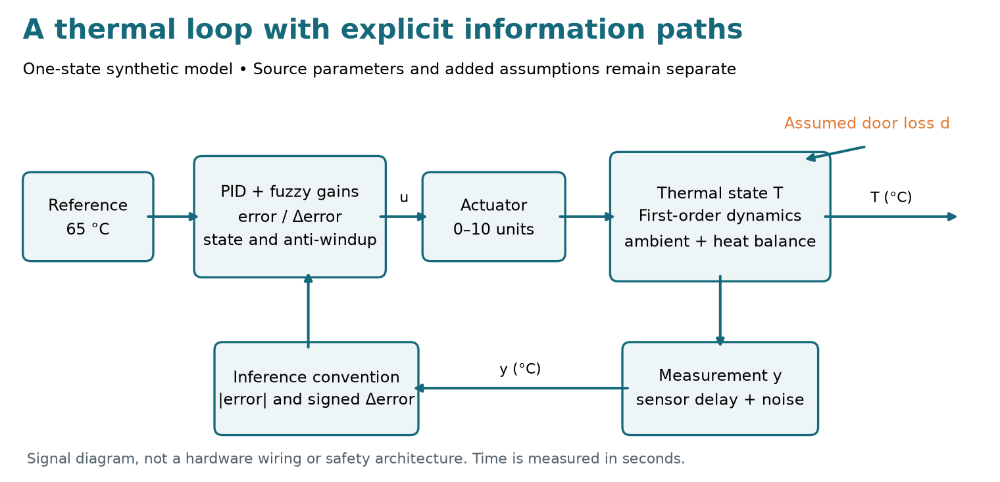
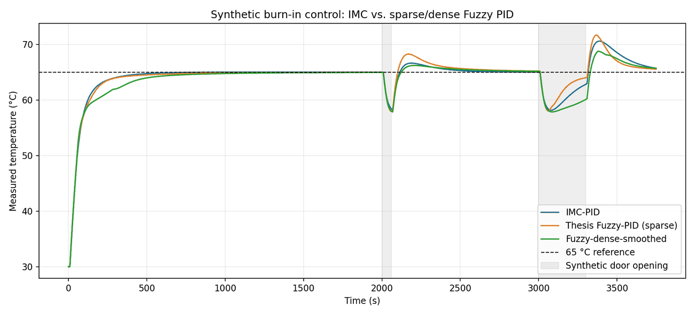
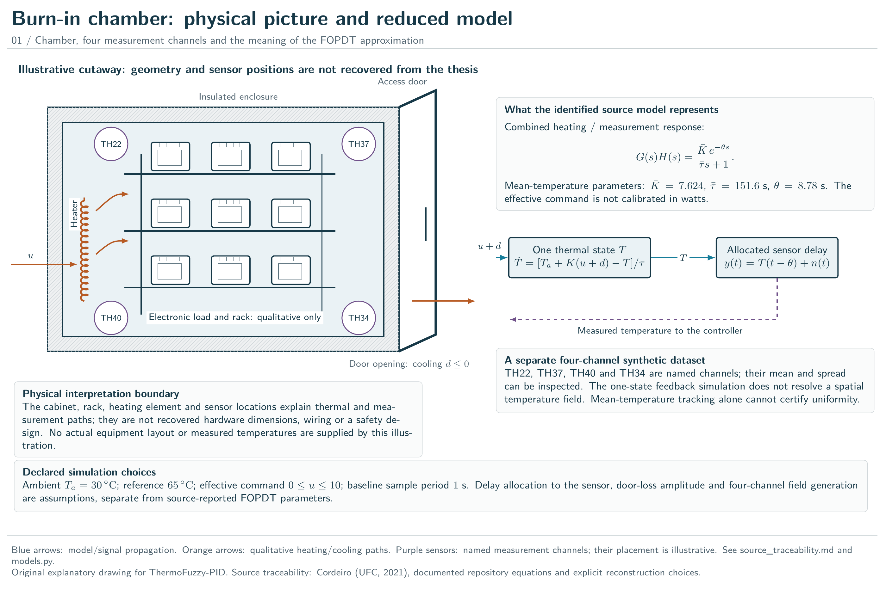
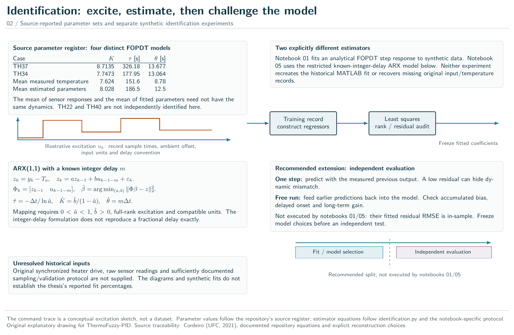
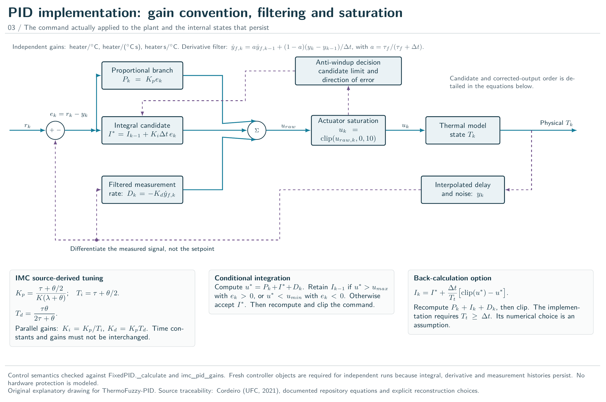
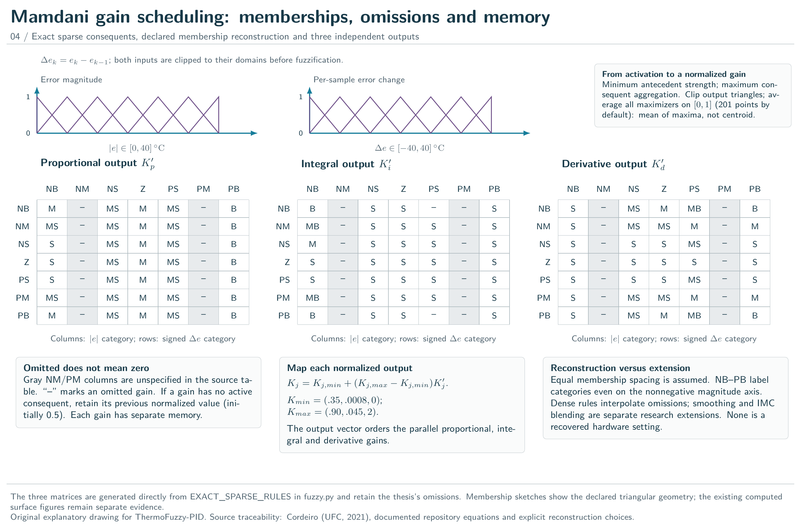
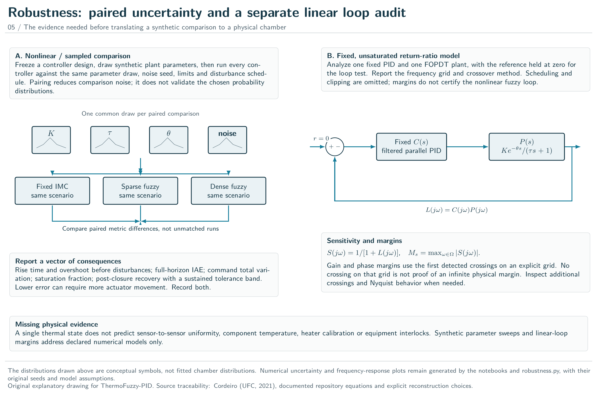
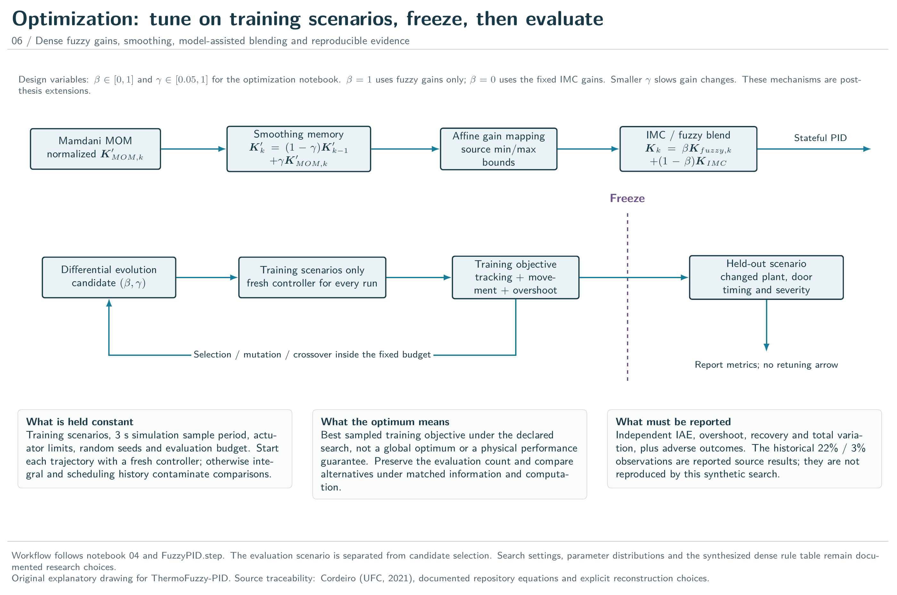

burnin_pid_fuzzy
ThermoFuzzy-PID: thermal models, adaptive control and inspectable experiments.
Python reference for the research software accompanying the repository's independent reconstruction of Matheus Gomes Cordeiro's 2021 undergraduate thesis, Projeto de um Controlador PID-Fuzzy para a Câmara de Burn-in. Reported model parameters, reconstructed assumptions and new experiments are kept distinct. All generated time series are synthetic.
Start with the physical loop

The single-state thermal approximation uses temperature in degrees Celsius, time in seconds, and effective heater input units:
$$ \tau\dot T=-(T-T_a)+K(u+d),\qquad y(t)=T(t-\theta)+\eta(t). $$
This allocation of the combined fitted delay to measurement is an explicit modeling choice. The actuator scale and door-loss pulses are assumptions; there are no original sensor records in this package.
Follow a complete experiment
After installing the repository with python -m pip install -e .:
from burnin_pid_fuzzy import Plant, Scenario, FixedPID, imc_pid_gains, simulate, evaluate
plant = Plant("declared model", K=7.624, tau=151.6, delay=8.78)
scenario = Scenario()
controller = FixedPID(imc_pid_gains(plant.K, plant.tau, plant.delay), dt=scenario.dt)
trace = simulate(controller, plant, scenario, seed=2021)
metrics = evaluate(trace, scenario)
assert len(trace["time_s"]) == 3751
assert metrics["IAE_c_s"] > 0
Construct a new controller for each run: controller state is advanced in place.
Use burnin_pid_fuzzy.models.simulate_methods for the matched three-controller
comparison shown below.

Read the curve and the metric together: lower integrated error, faster first rise and faster door recovery are different criteria. Filling missing fuzzy rules is an experiment and does not guarantee a better result.
API map
| Module | Question answered |
|---|---|
burnin_pid_fuzzy.models |
Which thermal state, delay, input and disturbance are simulated? |
burnin_pid_fuzzy.controllers |
How are IMC gains, saturation, anti-windup and fuzzy scheduling applied? |
burnin_pid_fuzzy.fuzzy |
Which rules fire, which outputs are held and how is mean-of-maxima evaluated? |
burnin_pid_fuzzy.identification |
How is a stable first-order ARX model fitted for a known integer delay? |
burnin_pid_fuzzy.metrics |
Which trajectory interval and information define each reported metric? |
burnin_pid_fuzzy.robustness |
What do sampled fixed-linear-loop margins establish? |
Learn, inspect and reproduce
- Five notebooks and Colab links
- Theoretical foundations
- Experimental protocol
- Source traceability
- MATLAB implementations
- Simulink generator and execution limits
- Rebuilding this illustrated reference
The package's functions are exported below for convenience; each module page adds its full implementation context. Numerical checks do not certify hardware safety, reproduce the thesis's measured timing claims or validate adaptive controller stability. The fixed-loop analysis applies only to its declared linear, unsaturated, fixed-gain model.
1r"""ThermoFuzzy-PID: thermal models, adaptive control and inspectable experiments. 2 3Python reference for the research software accompanying the repository's 4independent reconstruction of Matheus Gomes Cordeiro's 2021 undergraduate 5thesis, *Projeto de um Controlador PID-Fuzzy para a Câmara de Burn-in*. 6Reported model parameters, reconstructed assumptions and new experiments are 7kept distinct. All generated time series are synthetic. 8 9## Start with the physical loop 10 11 12 13The single-state thermal approximation uses temperature in degrees Celsius, 14time in seconds, and effective heater input units: 15 16$$ 17\tau\dot T=-(T-T_a)+K(u+d),\qquad 18y(t)=T(t-\theta)+\eta(t). 19$$ 20 21This allocation of the combined fitted delay to measurement is an explicit 22modeling choice. The actuator scale and door-loss pulses are assumptions; 23there are no original sensor records in this package. 24 25## Follow a complete experiment 26 27After installing the repository with `python -m pip install -e .`: 28 29```python 30from burnin_pid_fuzzy import Plant, Scenario, FixedPID, imc_pid_gains, simulate, evaluate 31 32plant = Plant("declared model", K=7.624, tau=151.6, delay=8.78) 33scenario = Scenario() 34controller = FixedPID(imc_pid_gains(plant.K, plant.tau, plant.delay), dt=scenario.dt) 35trace = simulate(controller, plant, scenario, seed=2021) 36metrics = evaluate(trace, scenario) 37assert len(trace["time_s"]) == 3751 38assert metrics["IAE_c_s"] > 0 39``` 40 41Construct a new controller for each run: controller state is advanced in place. 42Use `burnin_pid_fuzzy.models.simulate_methods` for the matched three-controller 43comparison shown below. 44 45 46 47Read the curve and the metric together: lower integrated error, faster first 48rise and faster door recovery are different criteria. Filling missing fuzzy 49rules is an experiment and does not guarantee a better result. 50 51## API map 52 53| Module | Question answered | 54|---|---| 55| `burnin_pid_fuzzy.models` | Which thermal state, delay, input and disturbance are simulated? | 56| `burnin_pid_fuzzy.controllers` | How are IMC gains, saturation, anti-windup and fuzzy scheduling applied? | 57| `burnin_pid_fuzzy.fuzzy` | Which rules fire, which outputs are held and how is mean-of-maxima evaluated? | 58| `burnin_pid_fuzzy.identification` | How is a stable first-order ARX model fitted for a known integer delay? | 59| `burnin_pid_fuzzy.metrics` | Which trajectory interval and information define each reported metric? | 60| `burnin_pid_fuzzy.robustness` | What do sampled fixed-linear-loop margins establish? | 61 62## Learn, inspect and reproduce 63 64- [Five notebooks and Colab links](https://github.com/fobos123deimos/thermofuzzy-pid#google-colab-notebooks) 65- [Theoretical foundations](https://github.com/fobos123deimos/thermofuzzy-pid/blob/main/docs/theoretical_foundations.md) 66- [Experimental protocol](https://github.com/fobos123deimos/thermofuzzy-pid/blob/main/docs/experimental_protocol.md) 67- [Source traceability](https://github.com/fobos123deimos/thermofuzzy-pid/blob/main/docs/source_traceability.md) 68- [MATLAB implementations](https://github.com/fobos123deimos/thermofuzzy-pid/tree/main/matlab) 69- [Simulink generator and execution limits](https://github.com/fobos123deimos/thermofuzzy-pid/blob/main/simulink/README.md) 70- [Rebuilding this illustrated reference](https://github.com/fobos123deimos/thermofuzzy-pid/blob/main/docs/API_DOCUMENTATION.md) 71 72The package's functions are exported below for convenience; each module page 73adds its full implementation context. Numerical checks do not certify hardware 74safety, reproduce the thesis's measured timing claims or validate adaptive 75controller stability. The fixed-loop analysis applies only to its declared 76linear, unsaturated, fixed-gain model. 77""" 78from .models import PLANTS_FROM_THESIS, Plant, DoorEvent, Scenario, simulate, benchmark_scenario 79from .controllers import PIDGains, FixedPID, FuzzyPID, imc_pid_gains 80from .fuzzy import FuzzyRuleBase, infer_normalized_gains 81from .metrics import evaluate 82from .identification import ARXEstimate, fit_first_order_arx, simulate_sampled_arx 83from .robustness import RobustnessMargins, assess_fixed_pid_robustness, linear_loop_response 84 85__all__ = [ 86 "PLANTS_FROM_THESIS", "Plant", "DoorEvent", "Scenario", "simulate", 87 "benchmark_scenario", "PIDGains", "FixedPID", "FuzzyPID", "imc_pid_gains", 88 "FuzzyRuleBase", "infer_normalized_gains", "evaluate", 89 "ARXEstimate", "fit_first_order_arx", "simulate_sampled_arx", 90 "RobustnessMargins", "assess_fixed_pid_robustness", "linear_loop_response" 91]
Detailed thermal-control atlas
Physical interpretation, control semantics and evidence boundaries. Download the six-page vector atlas.






29@dataclass(frozen=True) 30class Plant: 31 """Positive-gain first-order-plus-dead-time parameter record. 32 33 `K` is degrees Celsius per effective heater unit; `tau` and `delay` are 34 seconds. The provenance string distinguishes source-reported parameters 35 from custom assumptions. Construction rejects nonpositive gain/time 36 constant and negative delay; it does not establish physical calibration. 37 """ 38 name: str 39 K: float 40 tau: float 41 delay: float 42 provenance: str = "2021 undergraduate thesis, Table/Section 3.1" 43 44 def __post_init__(self): 45 if self.K <= 0 or self.tau <= 0 or self.delay < 0: 46 raise ValueError("invalid FOPDT parameter")
Positive-gain first-order-plus-dead-time parameter record.
K is degrees Celsius per effective heater unit; tau and delay are
seconds. The provenance string distinguishes source-reported parameters
from custom assumptions. Construction rejects nonpositive gain/time
constant and negative delay; it does not establish physical calibration.
57@dataclass(frozen=True) 58class DoorEvent: 59 """Assumed input-equivalent cooling pulse on a half-open time interval. 60 61 `start` and `duration` are seconds; `severity <= 0` uses the same effective 62 heater units as the controller output. Simultaneous events add. These 63 pulses are not an identified door heat-transfer model. 64 """ 65 start: float 66 duration: float 67 severity: float # Negative input-equivalent heater demand, assumed. 68 69 def __post_init__(self): 70 if self.start < 0 or self.duration <= 0 or self.severity > 0: 71 raise ValueError("Door event: start >=0, duration>0, severity<=0")
74@dataclass(frozen=True) 75class Scenario: 76 """Synthetic simulation settings in seconds, Celsius and heater units. 77 78 The default reference is 65 degrees Celsius from a 30-degree ambient. 79 `measurement_noise_std` is a Celsius standard deviation for independent 80 Gaussian measurement noise. `actuator_max` describes the benchmark and 81 metric convention: `simulate_methods` passes it into fresh controllers; 82 when calling `simulate` directly, set the controller's own output bounds. 83 """ 84 duration: float = 3750. 85 dt: float = 1. 86 ambient: float = 30. 87 reference: float = 65. 88 actuator_max: float = 10. 89 measurement_noise_std: float = 0. 90 doors: tuple[DoorEvent, ...] = field(default_factory=lambda: ( 91 DoorEvent(2000., 60., -5.0), DoorEvent(3000., 300., -5.0))) 92 93 def __post_init__(self): 94 if self.dt <= 0 or self.duration <= 0 or self.actuator_max <= 0: 95 raise ValueError("invalid scenario") 96 if self.measurement_noise_std < 0: 97 raise ValueError("negative noise std")
Synthetic simulation settings in seconds, Celsius and heater units.
The default reference is 65 degrees Celsius from a 30-degree ambient.
measurement_noise_std is a Celsius standard deviation for independent
Gaussian measurement noise. actuator_max describes the benchmark and
metric convention: simulate_methods passes it into fresh controllers;
when calling simulate directly, set the controller's own output bounds.
105def simulate(controller: FixedPID | FuzzyPID, plant: Plant | None = None, 106 scenario: Scenario | None = None, seed: int = 2021) -> dict[str, np.ndarray]: 107 """Exact-ZOH plant discretization with fractional sensor delay interpolation. 108 109 Simulation uses Celsius, seconds and *effective heater units*. All door 110 severities, ambient values and actuator limits are illustrative assumptions. 111 112 `controller` is stateful and is advanced in place, without a reset; create 113 a fresh instance for each independent run. Its sample period must match 114 `scenario.dt`. The seed controls independent Gaussian sensor noise. 115 Return equal-length one-dimensional arrays: `time_s`, `temperature_c` 116 (physical state), `measurement_c` (delayed/noisy), `control`, `disturbance`, 117 parallel gains `kp`, `ki`, `kd`, and `reference_c`. Only the controller 118 applies actuator saturation. No hardware or output-temperature protection 119 is implemented by this numerical experiment. 120 """ 121 plant = plant or PLANTS_FROM_THESIS["mean_temperature"] 122 scenario = scenario or benchmark_scenario() 123 if not np.isclose(controller.dt, scenario.dt): 124 raise ValueError("controller.dt must equal scenario.dt") 125 t = np.arange(0., scenario.duration + scenario.dt * .25, scenario.dt) 126 n = len(t) 127 temperature = np.empty(n) 128 temperature[0] = scenario.ambient 129 measurement = np.empty(n) 130 heat = np.empty(n) 131 disturbance = np.zeros(n) 132 gains = np.empty((n, 3)) 133 rng = np.random.default_rng(seed) 134 for event in scenario.doors: 135 disturbance[(t >= event.start) & (t < event.start + event.duration)] += event.severity 136 alpha = np.exp(-scenario.dt / plant.tau) 137 for k in range(n): 138 delayed_index = (t[k] - plant.delay) / scenario.dt 139 if delayed_index <= 0: 140 sensed = temperature[0] 141 else: 142 lower = min(int(np.floor(delayed_index)), k) 143 higher = min(lower + 1, k) 144 frac = float(delayed_index - lower) if higher > lower else 0. 145 sensed = (1. - frac) * temperature[lower] + frac * temperature[higher] 146 measurement[k] = sensed + rng.normal(0., scenario.measurement_noise_std) 147 heat[k], g = controller.step(scenario.reference, measurement[k]) 148 gains[k] = [g.kp, g.ki, g.kd] 149 if k < n - 1: 150 # Identified model is a first-order *deviation* from ambient. 151 effective_input = heat[k] + disturbance[k] 152 temperature[k + 1] = (scenario.ambient + 153 (temperature[k] - scenario.ambient) * alpha + 154 plant.K * effective_input * (1. - alpha)) 155 return {"time_s": t, "temperature_c": temperature, 156 "measurement_c": measurement, "control": heat, 157 "disturbance": disturbance, "kp": gains[:, 0], 158 "ki": gains[:, 1], "kd": gains[:, 2], 159 "reference_c": np.full(n, scenario.reference)}
Exact-ZOH plant discretization with fractional sensor delay interpolation.
Simulation uses Celsius, seconds and effective heater units. All door severities, ambient values and actuator limits are illustrative assumptions.
controller is stateful and is advanced in place, without a reset; create
a fresh instance for each independent run. Its sample period must match
scenario.dt. The seed controls independent Gaussian sensor noise.
Return equal-length one-dimensional arrays: time_s, temperature_c
(physical state), measurement_c (delayed/noisy), control, disturbance,
parallel gains kp, ki, kd, and reference_c. Only the controller
applies actuator saturation. No hardware or output-temperature protection
is implemented by this numerical experiment.
100def benchmark_scenario() -> Scenario: 101 """Return the declared 3750-second, two-door-pulse synthetic scenario.""" 102 return Scenario()
Return the declared 3750-second, two-door-pulse synthetic scenario.
18@dataclass(frozen=True) 19class PIDGains: 20 """Parallel gains `(kp, ki, kd)` with actuator/measurement units. 21 22 For Celsius input error and effective heater output, units are heater/°C, 23 heater/(°C s) and heater s/°C respectively. `ki` and `kd` are gains, not 24 the ISA integral/derivative time constants. 25 """ 26 kp: float 27 ki: float # Parallel/independent gain, 1/s. 28 kd: float # Parallel/independent derivative gain, s. 29 30 @classmethod 31 def from_isa(cls, kp: float, ti: float, td: float) -> "PIDGains": 32 """Convert ISA parameters to parallel gains; `ti` and `td` are seconds. 33 34 Return `(kp, kp/ti, kp*td)` and reject `ti <= 0`. 35 """ 36 if ti <= 0: 37 raise ValueError("Ti must be > 0") 38 return cls(kp=kp, ki=kp / ti, kd=kp * td)
Parallel gains (kp, ki, kd) with actuator/measurement units.
For Celsius input error and effective heater output, units are heater/°C,
heater/(°C s) and heater s/°C respectively. ki and kd are gains, not
the ISA integral/derivative time constants.
30 @classmethod 31 def from_isa(cls, kp: float, ti: float, td: float) -> "PIDGains": 32 """Convert ISA parameters to parallel gains; `ti` and `td` are seconds. 33 34 Return `(kp, kp/ti, kp*td)` and reject `ti <= 0`. 35 """ 36 if ti <= 0: 37 raise ValueError("Ti must be > 0") 38 return cls(kp=kp, ki=kp / ti, kd=kp * td)
Convert ISA parameters to parallel gains; ti and td are seconds.
Return (kp, kp/ti, kp*td) and reject ti <= 0.
56class FixedPID: 57 """Stateful discrete PI(D) with filtered derivative on measurement. 58 59 `dt` and `derivative_filter` are seconds; `u_min` and `u_max` are actuator 60 units. Choose `conditional` integration or `back_calculation`; the latter 61 uses `tracking_time >= dt` seconds (default max of 10 s and `dt`). This 62 tracking time is an implementation assumption, not a thesis parameter. 63 The integral starts at zero and the first derivative sample is zero. 64 """ 65 def __init__(self, gains: PIDGains, dt: float = 1., u_min: float = 0., 66 u_max: float = 10., derivative_filter: float = 8., 67 anti_windup: str = "conditional", tracking_time: float | None = None): 68 if dt <= 0 or u_max <= u_min or derivative_filter <= 0: 69 raise ValueError("dt, u limits or derivative filter invalid") 70 if anti_windup not in {"conditional", "back_calculation"}: 71 raise ValueError("anti_windup must be 'conditional' or 'back_calculation'") 72 if tracking_time is not None and (not np.isfinite(tracking_time) or tracking_time < dt): 73 raise ValueError("tracking_time must be finite and >= dt") 74 self.anti_windup = anti_windup 75 # Tt >= dt makes the explicit Euler back-calculation correction bounded. 76 self.tracking_time = float(tracking_time if tracking_time is not None else max(dt, 10.0)) 77 self.gains = gains 78 self.dt, self.u_min, self.u_max = dt, u_min, u_max 79 self.derivative_filter = derivative_filter 80 self.integral = 0. 81 self.filtered_derivative = 0. 82 self.previous_measurement = None 83 self.previous_error = None 84 85 def _calculate(self, setpoint: float, measurement: float, gains: PIDGains): 86 error = float(setpoint - measurement) 87 if self.previous_measurement is None: 88 derivative_raw = 0. 89 else: 90 derivative_raw = (measurement - self.previous_measurement) / self.dt 91 a = self.derivative_filter / (self.derivative_filter + self.dt) 92 self.filtered_derivative = a * self.filtered_derivative + (1 - a) * derivative_raw 93 proportional = gains.kp * error 94 derivative = -gains.kd * self.filtered_derivative 95 integral_candidate = self.integral + gains.ki * self.dt * error 96 raw_candidate = proportional + integral_candidate + derivative 97 if self.anti_windup == "conditional": 98 # Reject integration only when it drives the output *further* into saturation. 99 if not ((raw_candidate > self.u_max and error > 0) or 100 (raw_candidate < self.u_min and error < 0)): 101 self.integral = integral_candidate 102 else: 103 # Back-calculation in independent gain convention, as described by 104 # the preliminary PI/PID engineering report in the private archive: 105 # I[k] = I[k-1] + dt*(Ki[k]*e[k] + (u_sat-u_raw)/Tt). 106 # This is a new, explicit implementation; the source report does not 107 # specify the original tracking time or digital discretization. 108 limited = float(np.clip(raw_candidate, self.u_min, self.u_max)) 109 self.integral = integral_candidate + (self.dt / self.tracking_time) * (limited - raw_candidate) 110 raw = proportional + self.integral + derivative 111 output = float(np.clip(raw, self.u_min, self.u_max)) 112 self.previous_measurement = float(measurement) 113 self.previous_error = error 114 return output 115 116 def step(self, setpoint: float, measurement: float) -> tuple[float, PIDGains]: 117 """Advance one sample and return saturated output and fixed gains. 118 119 Setpoint and measurement use the same temperature scale. Integral, 120 filtered derivative and error/measurement histories change in place. 121 """ 122 return self._calculate(setpoint, measurement, self.gains), self.gains
Stateful discrete PI(D) with filtered derivative on measurement.
dt and derivative_filter are seconds; u_min and u_max are actuator
units. Choose conditional integration or back_calculation; the latter
uses tracking_time >= dt seconds (default max of 10 s and dt). This
tracking time is an implementation assumption, not a thesis parameter.
The integral starts at zero and the first derivative sample is zero.
65 def __init__(self, gains: PIDGains, dt: float = 1., u_min: float = 0., 66 u_max: float = 10., derivative_filter: float = 8., 67 anti_windup: str = "conditional", tracking_time: float | None = None): 68 if dt <= 0 or u_max <= u_min or derivative_filter <= 0: 69 raise ValueError("dt, u limits or derivative filter invalid") 70 if anti_windup not in {"conditional", "back_calculation"}: 71 raise ValueError("anti_windup must be 'conditional' or 'back_calculation'") 72 if tracking_time is not None and (not np.isfinite(tracking_time) or tracking_time < dt): 73 raise ValueError("tracking_time must be finite and >= dt") 74 self.anti_windup = anti_windup 75 # Tt >= dt makes the explicit Euler back-calculation correction bounded. 76 self.tracking_time = float(tracking_time if tracking_time is not None else max(dt, 10.0)) 77 self.gains = gains 78 self.dt, self.u_min, self.u_max = dt, u_min, u_max 79 self.derivative_filter = derivative_filter 80 self.integral = 0. 81 self.filtered_derivative = 0. 82 self.previous_measurement = None 83 self.previous_error = None
116 def step(self, setpoint: float, measurement: float) -> tuple[float, PIDGains]: 117 """Advance one sample and return saturated output and fixed gains. 118 119 Setpoint and measurement use the same temperature scale. Integral, 120 filtered derivative and error/measurement histories change in place. 121 """ 122 return self._calculate(setpoint, measurement, self.gains), self.gains
Advance one sample and return saturated output and fixed gains.
Setpoint and measurement use the same temperature scale. Integral, filtered derivative and error/measurement histories change in place.
125class FuzzyPID(FixedPID): 126 """Adaptive Mamdani MOM PID; gains are independently mapped Eq. (2.14). 127 128 The "dense" variant fills omitted rules (new research extension). 129 `smoothing < 1` low-pass filters the gains (new research extension). 130 """ 131 GAIN_MIN = np.array([.35, .0008, 0.]) 132 GAIN_MAX = np.array([.90, .045, 2.]) 133 134 def __init__(self, mode: str = "sparse", smoothing: float = 1.0, 135 derivative_filter: float = 8., blend_imc: float = 1.0, 136 nominal: PIDGains | None = None, **kwargs): 137 if not 0 < smoothing <= 1: 138 raise ValueError("smoothing must be in (0,1]") 139 if not 0 <= blend_imc <= 1: 140 raise ValueError("blend_imc must be in [0,1]") 141 super().__init__(PIDGains(*((self.GAIN_MIN + self.GAIN_MAX) / 2)), 142 derivative_filter=derivative_filter, **kwargs) 143 self.rule_base = FuzzyRuleBase(mode=mode) 144 self.smoothing = smoothing 145 self.blend_imc = blend_imc 146 self.nominal = nominal or imc_pid_gains() 147 self.normalized = np.full(3, .5) 148 149 def step(self, setpoint: float, measurement: float) -> tuple[float, PIDGains]: 150 """Schedule gains, advance PID state and return output and new gains. 151 152 Error change is a per-sample difference, not a time derivative. Sparse 153 inactive consequents retain their previous normalized value, initially 154 0.5. Smoothing and optional IMC blending precede the inherited bounded 155 PID calculation. `blend_imc=1` uses only the fuzzy gains. 156 """ 157 error = float(setpoint - measurement) 158 de = 0. if self.previous_error is None else error - self.previous_error 159 normalized = infer_normalized_gains(error, de, 160 rule_base=self.rule_base, 161 previous=self.normalized) 162 self.normalized += self.smoothing * (normalized - self.normalized) 163 gains = self.GAIN_MIN + (self.GAIN_MAX - self.GAIN_MIN) * self.normalized 164 if self.blend_imc < 1: 165 nominal = np.array([self.nominal.kp, self.nominal.ki, self.nominal.kd]) 166 gains = self.blend_imc * gains + (1 - self.blend_imc) * nominal 167 self.gains = PIDGains(*map(float, gains)) 168 return self._calculate(setpoint, measurement, self.gains), self.gains
Adaptive Mamdani MOM PID; gains are independently mapped Eq. (2.14).
The "dense" variant fills omitted rules (new research extension).
smoothing < 1 low-pass filters the gains (new research extension).
134 def __init__(self, mode: str = "sparse", smoothing: float = 1.0, 135 derivative_filter: float = 8., blend_imc: float = 1.0, 136 nominal: PIDGains | None = None, **kwargs): 137 if not 0 < smoothing <= 1: 138 raise ValueError("smoothing must be in (0,1]") 139 if not 0 <= blend_imc <= 1: 140 raise ValueError("blend_imc must be in [0,1]") 141 super().__init__(PIDGains(*((self.GAIN_MIN + self.GAIN_MAX) / 2)), 142 derivative_filter=derivative_filter, **kwargs) 143 self.rule_base = FuzzyRuleBase(mode=mode) 144 self.smoothing = smoothing 145 self.blend_imc = blend_imc 146 self.nominal = nominal or imc_pid_gains() 147 self.normalized = np.full(3, .5)
149 def step(self, setpoint: float, measurement: float) -> tuple[float, PIDGains]: 150 """Schedule gains, advance PID state and return output and new gains. 151 152 Error change is a per-sample difference, not a time derivative. Sparse 153 inactive consequents retain their previous normalized value, initially 154 0.5. Smoothing and optional IMC blending precede the inherited bounded 155 PID calculation. `blend_imc=1` uses only the fuzzy gains. 156 """ 157 error = float(setpoint - measurement) 158 de = 0. if self.previous_error is None else error - self.previous_error 159 normalized = infer_normalized_gains(error, de, 160 rule_base=self.rule_base, 161 previous=self.normalized) 162 self.normalized += self.smoothing * (normalized - self.normalized) 163 gains = self.GAIN_MIN + (self.GAIN_MAX - self.GAIN_MIN) * self.normalized 164 if self.blend_imc < 1: 165 nominal = np.array([self.nominal.kp, self.nominal.ki, self.nominal.kd]) 166 gains = self.blend_imc * gains + (1 - self.blend_imc) * nominal 167 self.gains = PIDGains(*map(float, gains)) 168 return self._calculate(setpoint, measurement, self.gains), self.gains
Schedule gains, advance PID state and return output and new gains.
Error change is a per-sample difference, not a time derivative. Sparse
inactive consequents retain their previous normalized value, initially
0.5. Smoothing and optional IMC blending precede the inherited bounded
PID calculation. blend_imc=1 uses only the fuzzy gains.
41def imc_pid_gains(K: float = 7.624, tau: float = 151.6, 42 theta: float = 8.78, lam: float = 35.3273) -> PIDGains: 43 """2021 undergraduate thesis Table 2: IMC PID in independent/parallel convention. 44 45 Kp=(tau+theta/2)/(K*(lambda+theta)), Ti=tau+theta/2, 46 Td=tau*theta/(2*tau+theta); Ki=Kp/Ti, Kd=Kp*Td. 47 """ 48 if min(K, tau, lam) <= 0 or theta < 0: 49 raise ValueError("K, tau, lam positive; theta nonnegative") 50 kp = (tau + theta / 2) / (K * (lam + theta)) 51 ti = tau + theta / 2 52 td = tau * theta / (2 * tau + theta) 53 return PIDGains.from_isa(kp, ti, td)
2021 undergraduate thesis Table 2: IMC PID in independent/parallel convention.
Kp=(tau+theta/2)/(K*(lambda+theta)), Ti=tau+theta/2, Td=tautheta/(2tau+theta); Ki=Kp/Ti, Kd=Kp*Td.
77@dataclass(frozen=True) 78class FuzzyRuleBase: 79 """Select sparse source-derived or dense interpolated gain consequents. 80 81 `output_resolution` samples normalized `[0,1]` for mean-of-maxima 82 defuzzification; at least eleven points are required, with 201 by default. 83 Neither the interpolated rules nor the exact membership breakpoints are 84 claimed as recovered experimental controller settings. 85 """ 86 mode: str = "sparse" 87 output_resolution: int = 201 88 89 def __post_init__(self): 90 if self.mode not in {"sparse", "dense"}: 91 raise ValueError("mode must be 'sparse' or 'dense'") 92 if self.output_resolution < 11: 93 raise ValueError("output_resolution must be at least 11") 94 95 @property 96 def rules(self): 97 """Return a 7-by-7 table of `(kp, ki, kd)` linguistic consequents. 98 99 Rows are signed delta error and columns are error magnitude. `None` 100 denotes an absent rule or an unspecified output. Treat the returned 101 sparse table as read-only: it is the shared module-level source table. 102 """ 103 return EXACT_SPARSE_RULES if self.mode == "sparse" else _dense_rules_from_sparse()
Select sparse source-derived or dense interpolated gain consequents.
output_resolution samples normalized [0,1] for mean-of-maxima
defuzzification; at least eleven points are required, with 201 by default.
Neither the interpolated rules nor the exact membership breakpoints are
claimed as recovered experimental controller settings.
95 @property 96 def rules(self): 97 """Return a 7-by-7 table of `(kp, ki, kd)` linguistic consequents. 98 99 Rows are signed delta error and columns are error magnitude. `None` 100 denotes an absent rule or an unspecified output. Treat the returned 101 sparse table as read-only: it is the shared module-level source table. 102 """ 103 return EXACT_SPARSE_RULES if self.mode == "sparse" else _dense_rules_from_sparse()
Return a 7-by-7 table of (kp, ki, kd) linguistic consequents.
Rows are signed delta error and columns are error magnitude. None
denotes an absent rule or an unspecified output. Treat the returned
sparse table as read-only: it is the shared module-level source table.
106def infer_normalized_gains(error: float, delta_error: float, 107 *, rule_base: FuzzyRuleBase | None = None, 108 previous: np.ndarray | None = None) -> np.ndarray: 109 """Mamdani min/max inference; Mean-of-Maxima over discretized [0,1]. 110 111 For undefined outputs, the corresponding previous normalized gain is held. 112 Rules with absent antecedent combinations contribute zero activation. 113 114 `error` and `delta_error` use Celsius differences; delta error is a sample 115 difference, not degrees per second. The result has shape `(3,)` in 116 proportional/integral/derivative order. `previous` defaults to 0.5 for each 117 channel. Supply normalized previous values in `[0,1]`; the function checks 118 shape and finiteness but does not clip a retained previous value. 119 """ 120 base = rule_base or FuzzyRuleBase() 121 previous = np.full(3, 0.5) if previous is None else np.asarray(previous, dtype=float) 122 if previous.shape != (3,) or not np.all(np.isfinite(previous)): 123 raise ValueError("previous must be a finite array of shape (3,)") 124 e_mu = membership_degrees(abs(error), 0.0, 40.0) 125 de_mu = membership_degrees(delta_error, -40.0, 40.0) 126 # A single membership of each input is zero outside adjacent sets. 127 heights = np.zeros((3, 5)) 128 for i, row in enumerate(base.rules): 129 if de_mu[i] <= 0: 130 continue 131 for j, outputs in enumerate(row): 132 if outputs is None or e_mu[j] <= 0: 133 continue 134 strength = min(de_mu[i], e_mu[j]) 135 for k, term in enumerate(outputs): 136 if term is not None: 137 col = LEVELS[term] 138 heights[k, col] = max(heights[k, col], strength) 139 140 universe = np.linspace(0., 1., base.output_resolution) 141 # Discretized isosceles output triangles, half triangles at the edges. 142 centers = np.linspace(0., 1., 5) 143 output_memberships = np.maximum(1 - np.abs(universe[:, None] - centers[None, :]) / 0.25, 0) 144 gains = previous.copy() 145 for k in range(3): 146 if np.max(heights[k]) <= 0: 147 continue 148 mu = np.max(np.minimum(output_memberships, heights[k][None, :]), axis=1) 149 maximum = np.max(mu) 150 positions = universe[np.isclose(mu, maximum, rtol=0, atol=1.e-10)] 151 gains[k] = float(positions.mean()) # Mean of ALL maxima, not a centroid. 152 return gains
Mamdani min/max inference; Mean-of-Maxima over discretized [0,1].
For undefined outputs, the corresponding previous normalized gain is held. Rules with absent antecedent combinations contribute zero activation.
error and delta_error use Celsius differences; delta error is a sample
difference, not degrees per second. The result has shape (3,) in
proportional/integral/derivative order. previous defaults to 0.5 for each
channel. Supply normalized previous values in [0,1]; the function checks
shape and finiteness but does not clip a retained previous value.
20def evaluate(result: dict[str, np.ndarray], scenario: Scenario | None = None, 21 recovery_tolerance_c: float = 2., recovery_hold_s: float = 30.) -> dict[str, float]: 22 """Score measured-temperature tracking under the declared synthetic scenario. 23 24 Read the equal-length `time_s`, `measurement_c` and `control` arrays from 25 `models.simulate`. The scenario must match the simulation. Rise time and 26 overshoot use samples before the first door event; IAE uses the whole 27 record and a rectangular sum with median sample interval. Time to 60 °C 28 is a fixed diagnostic, independent of the requested reference. 29 30 Return seconds, Celsius overshoot, Celsius-seconds IAE, actuator total 31 variation and saturation fraction. Each door recovery starts at closure 32 and requires `recovery_hold_s` consecutive seconds inside the specified 33 Celsius band before the next event. Unreached thresholds return NaN. 34 Assumes an increasing regular time grid with at least two samples and a 35 nonempty pre-door interval; it does not validate an arbitrary trace schema. 36 """ 37 scenario = scenario or Scenario() 38 t, y, u = result["time_s"], result["measurement_c"], result["control"] 39 r = float(scenario.reference) 40 ambient = float(scenario.ambient) 41 first_door = min((d.start for d in scenario.doors), default=t[-1]) 42 mask = t < first_door 43 initial_to_ref = r-ambient 44 t10 = _first_crossing(t[mask], y[mask], ambient + .1 * initial_to_ref) 45 t90 = _first_crossing(t[mask], y[mask], ambient + .9 * initial_to_ref) 46 overshoot = max(0., float(np.max(y[mask]) - r)) 47 dt = float(np.median(np.diff(t))) 48 iae = float(np.sum(np.abs(r-y)) * dt) 49 tv = float(np.sum(np.abs(np.diff(u)))) 50 result_metrics = { 51 "rise_time_10_90_s": t90 - t10 if np.isfinite(t90) and np.isfinite(t10) else np.nan, 52 "time_to_60_c_s": _first_crossing(t[mask], y[mask], 60.), 53 "overshoot_before_doors_c": overshoot, 54 "IAE_c_s": iae, 55 "actuator_total_variation": tv, 56 "saturation_fraction": float(np.mean((u <= 1.e-7) | (u >= scenario.actuator_max - 1.e-7))), 57 } 58 # Recover only after door closure and require consecutive held-in-band samples. 59 n_hold = max(1, int(np.ceil(recovery_hold_s / dt))) 60 for j, door in enumerate(scenario.doors, start=1): 61 close_t = door.start + door.duration 62 end = scenario.doors[j].start if j < len(scenario.doors) else t[-1] + dt 63 candidates = np.flatnonzero((t >= close_t) & (t < end)) 64 recovery = np.nan 65 for idx in candidates: 66 if idx + n_hold <= len(t) and t[idx + n_hold-1] < end and np.all(np.abs(y[idx:idx+n_hold] - r) <= recovery_tolerance_c): 67 recovery = float(t[idx] - close_t) 68 break 69 result_metrics[f"door_{j}_recovery_s"] = recovery 70 return result_metrics
Score measured-temperature tracking under the declared synthetic scenario.
Read the equal-length time_s, measurement_c and control arrays from
models.simulate. The scenario must match the simulation. Rise time and
overshoot use samples before the first door event; IAE uses the whole
record and a rectangular sum with median sample interval. Time to 60 °C
is a fixed diagnostic, independent of the requested reference.
Return seconds, Celsius overshoot, Celsius-seconds IAE, actuator total
variation and saturation fraction. Each door recovery starts at closure
and requires recovery_hold_s consecutive seconds inside the specified
Celsius band before the next event. Unreached thresholds return NaN.
Assumes an increasing regular time grid with at least two samples and a
nonempty pre-door interval; it does not validate an arbitrary trace schema.
22@dataclass(frozen=True) 23class ARXEstimate: 24 """First-order fitted coefficients and in-sample residual summary. 25 26 `a` is dimensionless, `b` is Celsius per input unit, `delay_samples` is an 27 integer input delay and `sample_period_s` is seconds. `rmse_c` is the 28 one-step residual RMSE on the fitted rows; it is not held-out free-run 29 accuracy. Continuous mappings assume `0 < a < 1` and positive `b`. 30 """ 31 a: float 32 b: float 33 delay_samples: int 34 sample_period_s: float 35 ambient_c: float 36 rmse_c: float 37 n_samples: int 38 39 @property 40 def tau_s(self) -> float: 41 """Equivalent positive first-order time constant in seconds.""" 42 return float(-self.sample_period_s / np.log(self.a)) 43 44 @property 45 def steady_state_gain(self) -> float: 46 """Equivalent continuous steady-state gain in Celsius per input unit.""" 47 return float(self.b / (1. - self.a)) 48 49 @property 50 def dead_time_s(self) -> float: 51 """Known integer input delay converted to seconds.""" 52 return self.delay_samples * self.sample_period_s
First-order fitted coefficients and in-sample residual summary.
a is dimensionless, b is Celsius per input unit, delay_samples is an
integer input delay and sample_period_s is seconds. rmse_c is the
one-step residual RMSE on the fitted rows; it is not held-out free-run
accuracy. Continuous mappings assume 0 < a < 1 and positive b.
39 @property 40 def tau_s(self) -> float: 41 """Equivalent positive first-order time constant in seconds.""" 42 return float(-self.sample_period_s / np.log(self.a))
Equivalent positive first-order time constant in seconds.
55def fit_first_order_arx( 56 input_u: np.ndarray, 57 temperature_c: np.ndarray, 58 *, 59 dt: float, 60 delay_samples: int, 61 ambient_c: float = 30.0, 62) -> ARXEstimate: 63 """Least-squares ARX(1,1,m+1) for a known input delay. 64 65 Inputs are equally sampled *at the same timestamps*. For constant inputs, 66 the ARX parameters may be unidentifiable: the design matrix must have rank 2. 67 No claim is made that the returned estimates match the thesis ARX model. 68 69 `input_u` and `temperature_c` are equal-length finite one-dimensional 70 arrays; `dt` is seconds. The fixed ambient is subtracted before fitting. 71 Return `ARXEstimate`, rejecting rank deficiency and coefficients outside 72 the stable, positive-gain first-order family. Delay is supplied, not 73 estimated. Split trajectories before fitting and score independent data. 74 """ 75 u = np.asarray(input_u, dtype=float) 76 temperature = np.asarray(temperature_c, dtype=float) 77 if u.ndim != 1 or temperature.ndim != 1 or len(u) != len(temperature): 78 raise ValueError("input_u and temperature_c must be equal-length 1D arrays") 79 if dt <= 0 or not np.isfinite(dt): 80 raise ValueError("dt must be finite and strictly positive") 81 if not isinstance(delay_samples, (int, np.integer)) or delay_samples < 0: 82 raise ValueError("delay_samples must be a nonnegative integer") 83 if len(u) - delay_samples - 1 < 5: 84 raise ValueError("not enough samples for the specified dead time") 85 if not (np.all(np.isfinite(u)) and np.all(np.isfinite(temperature))): 86 raise ValueError("input data and temperature must be finite") 87 y = temperature - float(ambient_c) 88 # k = m+1,...,N-1 ensures the entire lagged input is observed. 89 k = np.arange(delay_samples + 1, len(y)) 90 X = np.column_stack([y[k - 1], u[k - 1 - delay_samples]]) 91 if np.linalg.matrix_rank(X) < 2: 92 raise ValueError("system is not identifiable: regressor matrix is rank deficient") 93 a, b = np.linalg.lstsq(X, y[k], rcond=None)[0] 94 if not (0 < a < 1 and b > 0): 95 raise ValueError("estimated model is not a stable positive-gain first-order process") 96 residual = y[k] - X @ np.array([a, b]) 97 return ARXEstimate(a=float(a), b=float(b), delay_samples=int(delay_samples), 98 sample_period_s=float(dt), ambient_c=float(ambient_c), 99 rmse_c=float(np.sqrt(np.mean(residual ** 2))), n_samples=len(k))
Least-squares ARX(1,1,m+1) for a known input delay.
Inputs are equally sampled at the same timestamps. For constant inputs, the ARX parameters may be unidentifiable: the design matrix must have rank 2. No claim is made that the returned estimates match the thesis ARX model.
input_u and temperature_c are equal-length finite one-dimensional
arrays; dt is seconds. The fixed ambient is subtracted before fitting.
Return ARXEstimate, rejecting rank deficiency and coefficients outside
the stable, positive-gain first-order family. Delay is supplied, not
estimated. Split trajectories before fitting and score independent data.
102def simulate_sampled_arx( 103 input_u: np.ndarray, *, K: float, tau_s: float, dt: float, 104 delay_samples: int, ambient_c: float = 30.0, 105) -> np.ndarray: 106 """Exact ZOH samples for a deliberately *integer* input dead time. 107 108 This educational generator is not raw burn-in-chamber measurement data. 109 An implicit zero heater input is assumed for indices before the first sample. 110 111 Return a Celsius array matching the one-dimensional input shape, starting 112 at `ambient_c`. `tau_s` and `dt` are seconds; `K` is Celsius per input unit. 113 This generator places delay at the input, while `models.simulate` allocates 114 the combined delay to measurement. Do not equate their internal states. 115 """ 116 u = np.asarray(input_u, dtype=float) 117 if u.ndim != 1 or not np.all(np.isfinite(u)): 118 raise ValueError("input_u must be a finite 1D array") 119 if K <= 0 or tau_s <= 0 or dt <= 0 or delay_samples < 0: 120 raise ValueError("K, tau_s, dt must be positive, delay nonnegative") 121 if not isinstance(delay_samples, (int, np.integer)): 122 raise ValueError("delay_samples must be an integer") 123 a = float(np.exp(-dt / tau_s)) 124 y = np.zeros(len(u), dtype=float) 125 for k in range(1, len(u)): 126 idx = k - 1 - delay_samples 127 y[k] = a * y[k - 1] + K * (1 - a) * (u[idx] if idx >= 0 else 0) 128 return y + float(ambient_c)
Exact ZOH samples for a deliberately integer input dead time.
This educational generator is not raw burn-in-chamber measurement data. An implicit zero heater input is assumed for indices before the first sample.
Return a Celsius array matching the one-dimensional input shape, starting
at ambient_c. tau_s and dt are seconds; K is Celsius per input unit.
This generator places delay at the input, while models.simulate allocates
the combined delay to measurement. Do not equate their internal states.
21@dataclass(frozen=True) 22class RobustnessMargins: 23 """Grid-dependent fixed-loop sensitivity and approximate first margins. 24 25 `maximum_sensitivity` and `gain_margin` are ratios, phase margin is in 26 degrees, and peak frequency is rad/s. Infinite gain/phase margin means no 27 crossing was detected on the sampled grid, not proof of infinite margin. 28 """ 29 maximum_sensitivity: float 30 gain_margin: float # ratio, not dB; inf = no crossing on sampled grid 31 phase_margin_deg: float # inf = no crossing on sampled grid 32 peak_frequency_rad_s: float
Grid-dependent fixed-loop sensitivity and approximate first margins.
maximum_sensitivity and gain_margin are ratios, phase margin is in
degrees, and peak frequency is rad/s. Infinite gain/phase margin means no
crossing was detected on the sampled grid, not proof of infinite margin.
71def assess_fixed_pid_robustness( 72 plant: Plant, 73 gains: PIDGains, 74 *, 75 omega_rad_s: np.ndarray | None = None, 76 derivative_filter_time_s: float = 8.0, 77) -> RobustnessMargins: 78 """Numerical M_s and approximate gain/phase margins over an explicit grid. 79 80 Report 2 of the original research program discusses GM>1.7, 81 M_s<2.2 and PM>30 degrees as *design targets*. They are not guaranteed 82 by this method. Multiple crossovers require detailed Nyquist review. 83 """ 84 w = (np.logspace(-6, 1, 5000) if omega_rad_s is None 85 else np.asarray(omega_rad_s, dtype=float)) 86 if len(w) < 3 or np.any(np.diff(w) <= 0): 87 raise ValueError("frequency grid must be strictly increasing with at least 3 values") 88 L = linear_loop_response(plant, gains, w, derivative_filter_time_s=derivative_filter_time_s) 89 S = 1. / (1. + L) 90 absS = np.abs(S) 91 maxidx = int(np.argmax(absS)) 92 peak_ms = float(absS[maxidx]) 93 if not np.isfinite(peak_ms): 94 raise ValueError("singular sampled loop sensitivity") 95 phase = np.unwrap(np.angle(L)) 96 mag = np.abs(L) 97 # Classical PM from the first unity-magnitude crossing. 98 mag_cross = _first_log_crossing(w, np.log(mag)) 99 if mag_cross is None: 100 pm = float("inf") 101 else: 102 j, a = mag_cross 103 phase_at_crossover = (1. - a) * phase[j] + a * phase[j + 1] 104 pm = float(180. + np.rad2deg(phase_at_crossover)) 105 # First -180° phase crossing. There may be several for delayed systems. 106 phase_cross = _first_log_crossing(w, phase + np.pi) 107 if phase_cross is None: 108 gm = float("inf") 109 else: 110 j, a = phase_cross 111 mag_at_phase_crossover = np.exp((1. - a) * np.log(mag[j]) + a * np.log(mag[j + 1])) 112 gm = float(1. / mag_at_phase_crossover) 113 return RobustnessMargins(maximum_sensitivity=peak_ms, gain_margin=gm, 114 phase_margin_deg=pm, peak_frequency_rad_s=float(w[maxidx]))
Numerical M_s and approximate gain/phase margins over an explicit grid.
Report 2 of the original research program discusses GM>1.7, M_s<2.2 and PM>30 degrees as design targets. They are not guaranteed by this method. Multiple crossovers require detailed Nyquist review.
35def linear_loop_response( 36 plant: Plant, gains: PIDGains, omega_rad_s: np.ndarray, 37 *, derivative_filter_time_s: float = 8.0, 38) -> np.ndarray: 39 """Return complex loop response on a positive finite rad/s frequency array. 40 41 Evaluate `G(jω)[Kp+Ki/(jω)+Kd*jω/(1+jω*Tf)]` with exact FOPDT 42 delay. Output has the same one-dimensional shape as `omega_rad_s`. 43 `derivative_filter_time_s` is positive seconds. This is the continuous 44 unsaturated fixed-gain model, not the discrete sampled PID implementation. 45 """ 46 omega = np.asarray(omega_rad_s, dtype=float) 47 if omega.ndim != 1 or len(omega) < 2 or not np.all(np.isfinite(omega)) or np.any(omega <= 0): 48 raise ValueError("frequencies must be a 1D array of strictly positive finite values") 49 if derivative_filter_time_s <= 0: 50 raise ValueError("derivative filter time must be positive") 51 s = 1j * omega 52 G = plant.K * np.exp(-plant.delay * s) / (plant.tau * s + 1.) 53 C = (gains.kp + gains.ki / s + 54 gains.kd * s / (1. + derivative_filter_time_s * s)) 55 return C * G
Return complex loop response on a positive finite rad/s frequency array.
Evaluate G(jω)[Kp+Ki/(jω)+Kd*jω/(1+jω*Tf)] with exact FOPDT
delay. Output has the same one-dimensional shape as omega_rad_s.
derivative_filter_time_s is positive seconds. This is the continuous
unsaturated fixed-gain model, not the discrete sampled PID implementation.